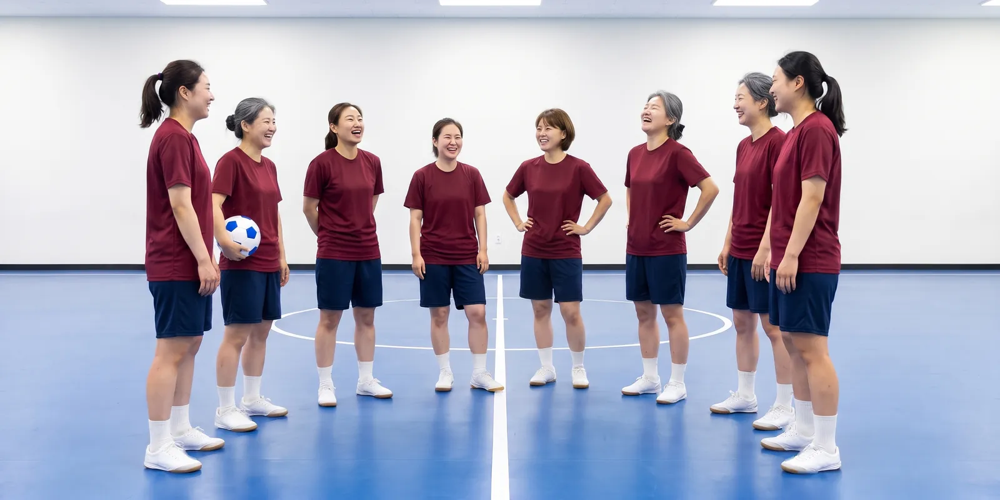
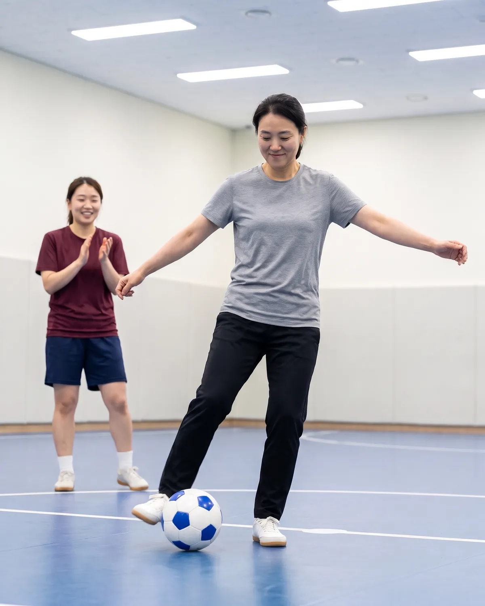
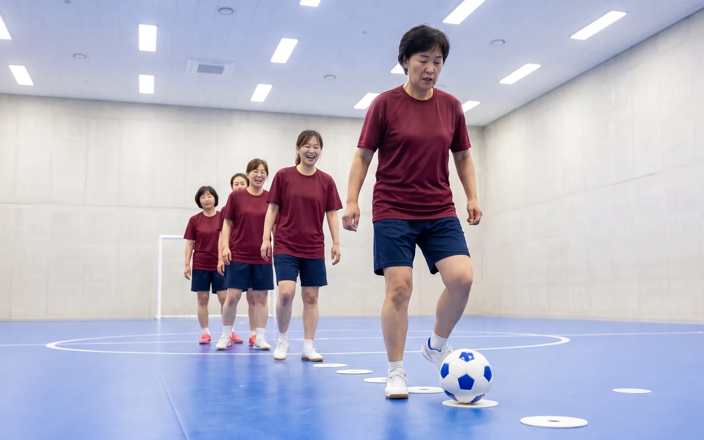
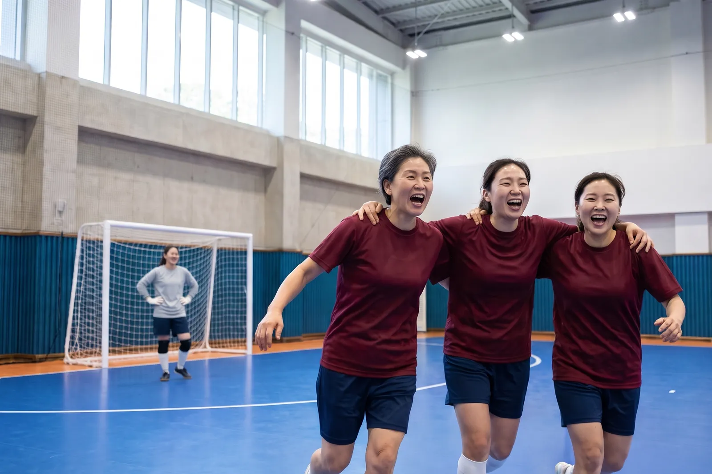
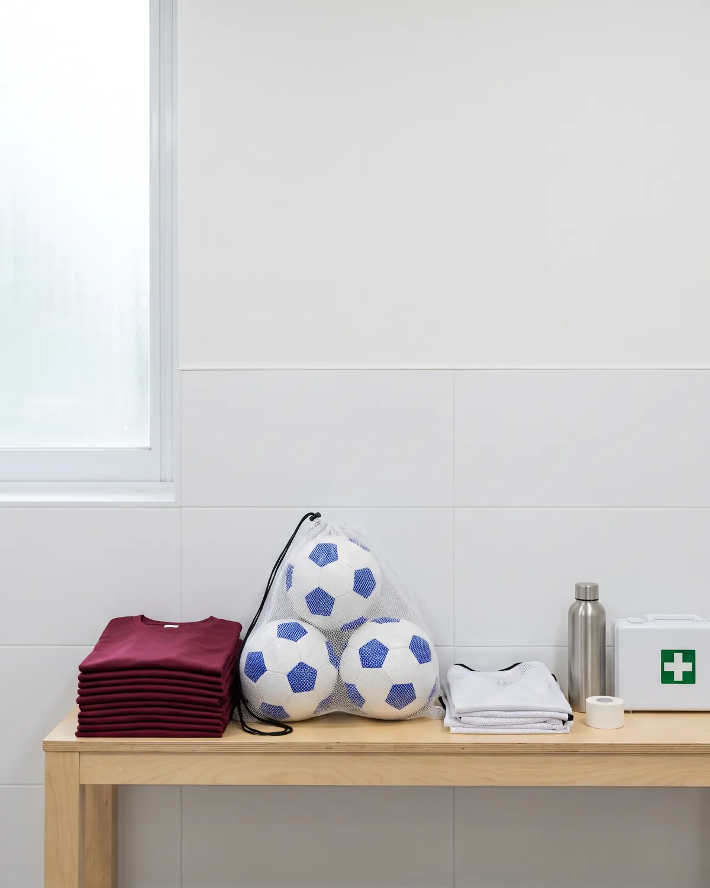
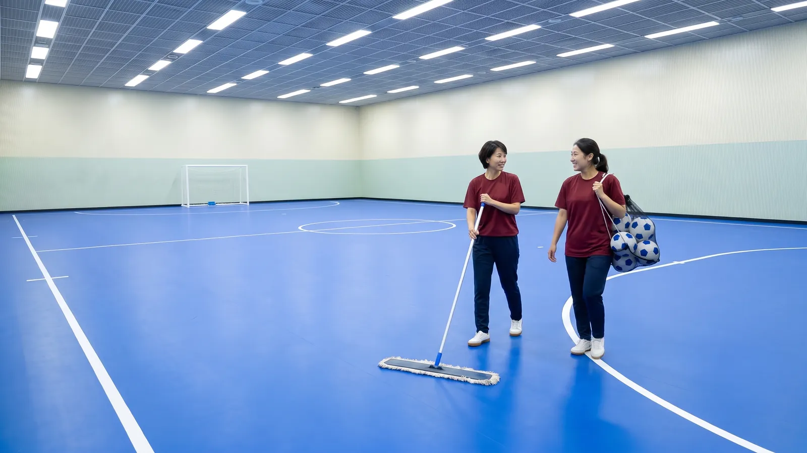

늦깎이 FS
월요일과 목요일 저녁 8시 반
물굽이시 모래뜸 생활체육관 2층
여자 풋살 클럽, 2021년 봄부터
같이 공 찰 사람,
못 차도 돼요.
2021년 봄, 체육관 게시판에 붙었던 쪽지예요. 여섯 명이 왔어요. 지금은 스물네 명이고, 그중 열아홉 명이 여기서 처음 공을 찼어요.
다음 훈련 월요일, 목요일 저녁 8시 반
처음 오는 날 안내
처음 오는 날
잘할 필요 없어요. 공을 한 번도 못 맞혀도 괜찮아요. 여기 있는 사람 대부분이 그렇게 시작했어요.
처음 두 번은 회비 없이 와요. 세 번째 오는 날 계속할지 정하면 돼요.

챙겨 올 것
- 실내 운동화바닥에 자국이 안 남는 고무 밑창이면 돼요. 밖에서 신던 신발로는 코트에 못 들어가요.
- 편한 운동복반바지든 트레이닝 바지든 괜찮아요.
- 물 한 병두 시간 동안 생각보다 많이 마셔요.
- 갈아입을 옷과 수건샤워실은 밤 10시 40분까지 써요.
공, 조끼, 정강이 보호대는 클럽 걸 빌려 드려요.
첫날 두 시간
- 20:302층 코트에서 인사해요. 이름표 스티커에 불리고 싶은 이름을 써요.
- 20:40다 같이 몸을 풀어요. 발목, 무릎, 가볍게 뛰기.
- 20:55둘씩 짝지어 패스해요.
- 21:20골키퍼 없이 작은 골대로 3 대 3.
- 21:50조끼 색으로 편을 나눠 미니게임. 첫날엔 몸싸움 없이 해요.
- 22:20코트를 같이 밀고 공을 세요.
훈련 일정
일주일에 두 번 저녁에 모이고, 리그가 있는 주는 토요일 오전에 경기해요.
- 월 20:30~22:30 기본기패스, 공 멈추기, 슛. 마지막 40분은 미니게임.
- 목 20:30~22:30 경기 연습킥인과 코너를 맞춰 보고, 편을 나눠 경기해요.
- 토 10:00~12:00 리그 경기, 격주경기 없는 주는 나오고 싶은 사람끼리 연습해요.
화, 수, 금, 일요일과 공휴일은 쉬어요. 체육관 사정으로 바뀌면 전날까지 단톡방에 올려요.
늦어도 그냥 오세요. 9시 전에만 오면 미니게임은 다 같이 해요.

경기 기록
작년 가을엔 한 경기도 못 이겼어요. 올해는 벌써 두 번 이겼어요.

2026 가을 물굽이시 생활체육 여자 풋살 리그. 여섯 팀과 격주 토요일 오전에 붙어요.
| 날짜 | 상대 | 점수, 늦깎이 FS 먼저 |
|---|---|---|
| 9.12원정 | 물수제비 FS전반에만 네 골 먹고, 후반은 1 대 1로 버텼어요. | 1 : 5짐 |
| 9.26홈 | FC 새벽반은채가 리그 첫 골을 넣었어요. | 2 : 2비김 |
| 10.10원정 | 반딧불 FC해경이 페널티킥을 하나 막았어요. | 0 : 3짐 |
| 10.24홈 | 둥근공 FS킥인으로만 두 골. 창단하고 처음 이긴 리그 경기예요. | 4 : 2이김 |
| 11.7원정 | 목련 FS끝나기 1분 전에 다온이 결승골을 넣었어요. | 2 : 1이김 |
| 11.21홈 | 물수제비 FS오전 10시, 모래뜸 생활체육관. 응원 와도 돼요. | 예정 |
| 12.5원정 | FC 새벽반시즌 마지막 경기예요. | 예정 |
회비
한 달 3만 원
코트 빌리는 값과 리그 참가비, 공이랑 조끼 값을 회원 수대로 나눈 거예요. 입회비는 없어요.
- 코트 대여
- 2시간 66,000원, 한 달 8번이면 528,000원
- 리그 참가비
- 한 시즌 270,000원, 한 달로 치면 90,000원
- 공, 조끼, 구급함
- 한 달 30,000원쯤
- 합계
- 648,000원을 24명이 나누면 27,000원
3만 원씩 걷고, 남는 돈은 모아 뒀다가 연말에 공과 조끼를 새로 사고 다 같이 밥을 먹어요. 그만두는 달은 그달 회비만 내요. 회비는 매달 첫 훈련 날 총무 수진에게 내거나 단톡방 공지에 있는 클럽 계좌로 보내요.
유니폼은 원하는 사람만 맞춰요. 클라렛 상의와 남색 반바지 한 벌에 45,000원이에요.

체육관
모래뜸 생활체육관 2층 다목적 코트

물굽이시 모래뜸로 27가상 서비스예요. 실제 주소가 아니에요.
- 코트
- 40 × 20미터, 파란 우레탄 바닥이에요. 이 페이지 색이 그 바닥 색이에요.
- 오는 길
- 모래뜸 네거리 버스 정류장에서 체육관 쪽으로 걸어서 4분.
- 주차
- 지하 1층, 2시간 무료. 1층 안내 데스크에서 차 번호를 적어요.
- 탈의실, 샤워실
- 2층 코트 옆에 있고 밤 10시 40분에 닫아요.
문의
그냥 와도 돼요.
월요일이나 목요일 저녁 8시 반에 2층 코트로 오면 누군가 먼저 인사할 거예요. 오기 전에 궁금한 게 있으면 남겨 주세요.